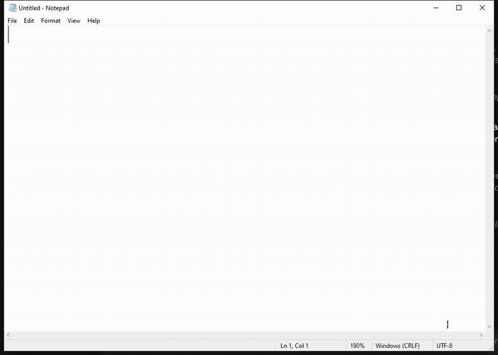
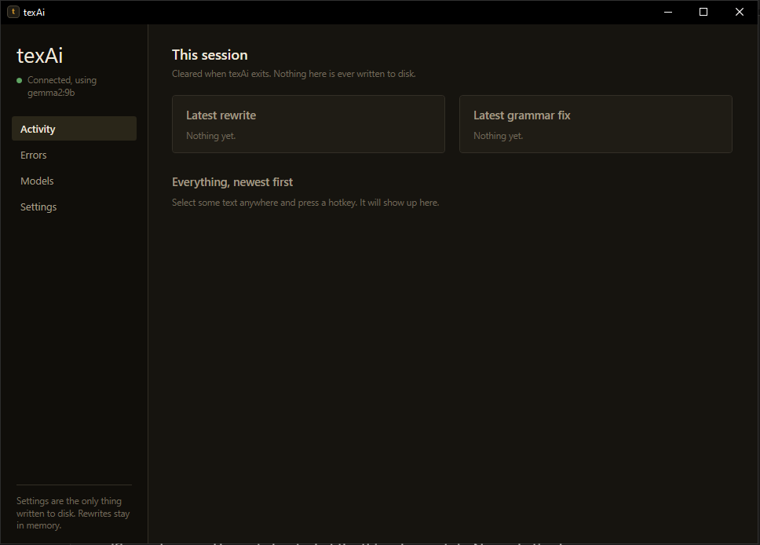
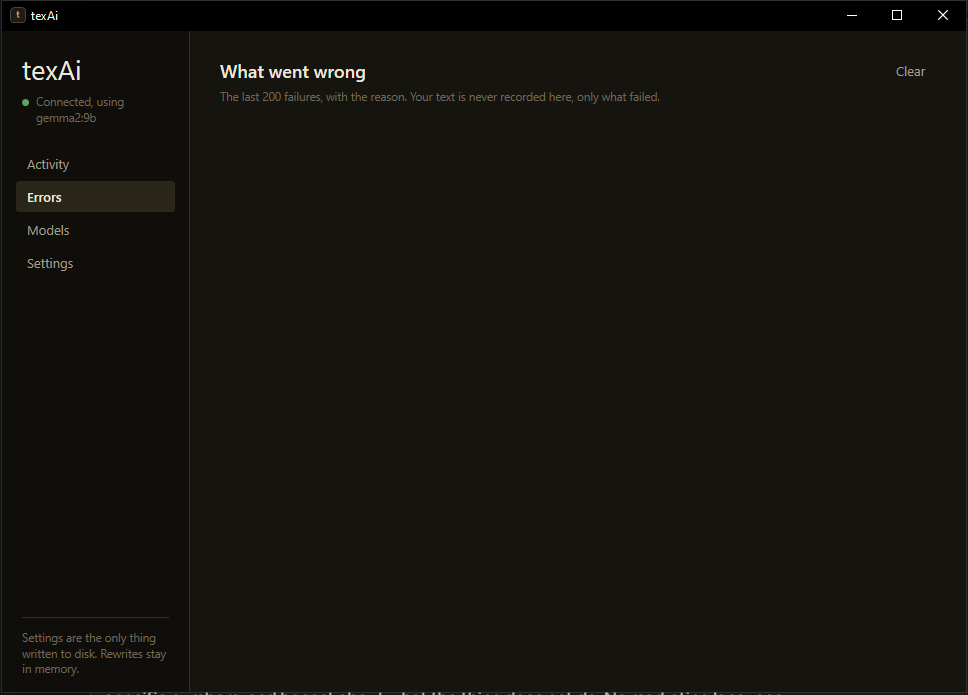
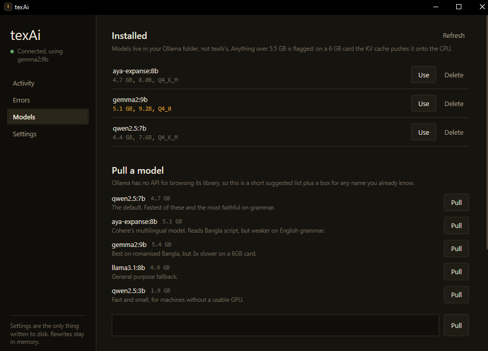
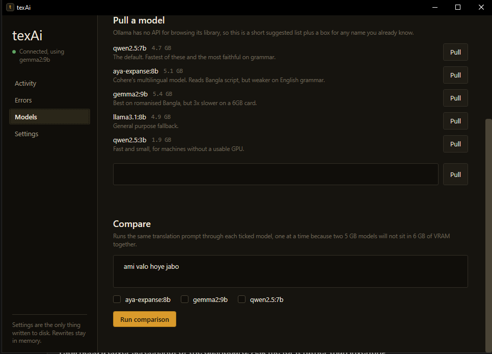
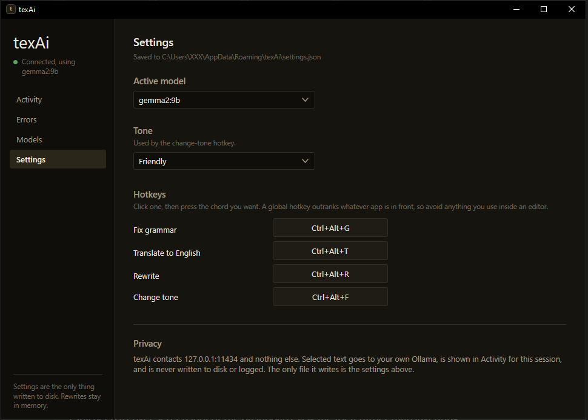

texAi
Select text in an app, press a hotkey, and texAi replaces the selection with a local model's rewrite. It stays in the system tray until you need it.

Overview
texAi is a Windows tray app I built in C# and .NET 8. It uses global hotkeys to capture selected text, sends it to an Ollama model running on the same machine, then pastes the response back over the selection. The four actions are grammar correction, translation to English, rewriting and tone change. All hotkeys can be rebound in the dashboard.
The project contains roughly 3,100 lines of C# and 1,060 lines of XAML. Version 2.0.3 is distributed through GitHub Releases with a per-user Inno Setup installer. The self-contained publish is about 162 MB and compresses to around 50 MB with LZMA2.
| Hotkey | Action |
|---|---|
Ctrl + Alt + G | Fix grammar |
Ctrl + Alt + T | Translate to English |
Ctrl + Alt + R | Rewrite |
Ctrl + Alt + F | Change tone |
Technology Stack
Desktop UI
- C# and .NET 8
- WPF
- WinForms references only for NotifyIcon and Screen
Windows integration
- RegisterHotKey
- SendInput
- GetAsyncKeyState
Local inference
- Ollama HTTP API
- 127.0.0.1:11434
- Model management and comparison dashboard
Build and release
- Self-contained .NET publish
- Inno Setup
- GitHub Releases
How a Rewrite Works
The hotkey handler waits for the physical key chord to be released, saves the current clipboard, copies the selection with synthetic Ctrl+C, sends the text to Ollama, pastes the response, then restores the clipboard. One transformation runs at a time. A second hotkey during a request is ignored.
Letting go before sending Ctrl+C
A registered global hotkey fires on key-down, while the user may still be holding its modifiers. If texAi injected Ctrl+C while Shift was still down, the target app could receive Ctrl+Shift+C. In Chrome or Firefox that opens the DevTools element picker instead of copying. texAi polls GetAsyncKeyState for the chord to release, then forces key-ups after 400 ms if needed.
Why Ctrl+Alt instead of Ctrl+Shift
Global hotkeys take priority over the focused application. Ctrl+Shift+T intercepted browser tab restore, Ctrl+Shift+R intercepted hard reload, and Ctrl+Shift+F intercepted find-in-files in VS Code. Moving to Ctrl+Alt avoided those conflicts.
Clipboard contents survive the round trip
texAi copies the user's clipboard data out before using it, then restores it after the rewrite. It retries when the clipboard is busy instead of abandoning the operation after a short 90 ms wait. If a failure occurs, the selected text stays as it was.
Comparing Local Models
I tested three models on an RTX 2060 with 6 GB of VRAM using romanised Bangla, Bangla script, grammar and tone prompts. The measurements below are from that machine.
| Model | Disk | Loaded | CPU share | Latency |
|---|---|---|---|---|
qwen2.5:7b, default | 4.4 GB | 5.1 GB | 18% | 0.4 to 0.9 s |
aya-expanse:8b | 4.7 GB | 6.6 GB | 36% | 0.8 to 1.9 s |
gemma2:9b | 5.1 GB | 7.1 GB | 46% | 1.8 to 3.2 s |
aya-expanse was my expected Bangla winner, but it produced “I have completed this project yesterday” and read “কালকের মিটিং” as “the meeting with the clock.” gemma2:9b was the only tested model to translate “ami valo hoye jabo” as “I will be well,” at about three times qwen's latency. None handled romanised Bangla reliably.
The dashboard flags models above 5.5 GB. The model weights are not the only VRAM cost: inference working memory is allocated on top, and a model that spills onto the CPU can turn a two-second rewrite into thirty seconds. texAi sends keep_alive: 30m with each request and preloads the model at startup, which avoids repeated idle unloads and CUDA warm-up delays.
Reliability and Packaging
Installer files instead of a single executable
I deliberately do not use PublishSingleFile. A single-file WPF build unpacks native libraries into %TEMP%\.net at launch. If the copy is missing or only partly written, WPF can throw DllNotFoundException from a window procedure before any UI appears. Since the installer already copies files, the single-file build added a failure mode without helping installation.
Keeping WPF's culture-dependent font cache working
InvariantGlobalization had to be removed when the app moved from WinForms to WPF. WPF's font cache creates CultureInfo instances for major languages while it determines typographic support. In invariant mode, the first laid-out TextBlock could throw.
Updates happen between sessions
The updater checks GitHub Releases after five minutes, then every twelve hours. Its background timer only downloads and stages an update, so it does not interrupt a rewrite. Installation happens once at the next launch, before the tray icon and hotkeys are created. The first check is delayed so it does not compete with model warm-up.
Version numbers must agree
The assembly version, installer version and release tag need to match. Version 2.0.2 shipped with assembly version 2.0.1, so the updater kept downloading that release. The project file now calls out this requirement.
Errors are named, and failed text stays intact
The dashboard distinguishes no selection, an unresponsive target app, a locked clipboard, Ollama not running, a missing model, a timeout and an empty response. Each failure path leaves the original selection untouched.
Privacy and Scope
texAi contacts 127.0.0.1:11434 and nothing else. Selected text is sent only to the local Ollama process, is never written to disk, and stays in memory for the dashboard session. The session history is cleared when the app exits. The only file texAi writes is %AppData%\texAi\settings.json, which stores the selected model, tone and hotkeys.
- The installer is per-user and does not require administrator rights.
- Ollama must be installed separately. texAi does not install Ollama or pull a model without the user's action.
- The model quality depends on the local model selected.
- Romanised Bangla remains unreliable in the models tested.
- The app runs on Windows only.
Dashboard
The dashboard shows session activity, named errors, installed models and their sizes, model downloads with progress, side-by-side model comparisons, and settings for the active model, tone and hotkeys.




